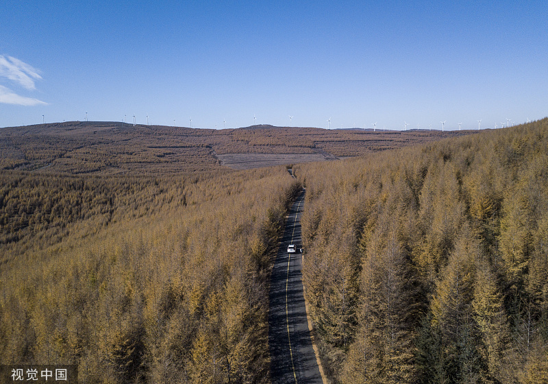

张家口旅游介绍
张家口市是河北省下辖地级市，又称"张垣""武城"，位于中国河北省西北部。张家口市地处京晋冀蒙交界处，距北京约180公里，因地势险要，有“塞外山城”之称。张家口是北方名城，自古即为兵防重镇和进入蒙俄及东欧市场的陆路商埠，具有优越的地理位置和区位优势。此外，张家口还是沟通中原与北疆、连接中西部资源产区与东部经济带的重要纽带。这里是现行长城最多的地区，素有"长城博物馆"的美称。 早在2016年11月，有着优越的地理位置和区位优势的张家口市被国家旅游局评为第二批国家全域旅游示范区。张家口不仅有浓厚的历史底蕴，而且古遗址数量众多，分布面广，是京郊游的主要目的地之一，张家口有青山绿水，也有大漠孤烟，坝上草原及一众全国排名领先的滑雪场深受游客欢迎。
大境门
大境门位于张家口市北侧，建于清顺治年间，是长城上的一处城门，也是张家口市的北侧门户。如今大境门作为珍贵的古迹，已成为张家口市的标志之一，来到张家口市区旅游的游客都会到此一看。大境门两侧是连绵的山峦，城门就立在山间，城门上书写着“大好河山”四个大字，是历史上后一任察哈尔都统高维岳在1927年前来时，被大境门旁壮丽的山景感动写下的。城门的两旁是盘山而上的长城，在城门内还有几处仿古建筑，开着一些店铺，可以供游客观看游玩。
鸡鸣驿
鸡鸣驿位于河北省怀来县鸡鸣驿乡鸡鸣驿村，是一处完整的明代驿站古城，古时鸡鸣驿作为进京的第一大驿站，众多机密要闻都从这里中转。该驿因山而得名，因驿而设城，以驿名定城名。据专家考证，鸡鸣驿城是全国现存规模最大、最富有特色的邮驿建筑群，具有重要的历史、艺术、科学价值。早在2001年，鸡鸣驿被国务院公布为全国重点文物保护单位。城内的有名建筑有慈禧行宫（别名贺家大院）、泰山行宫和文昌宫等，还有一座展示古代邮驿文化的小展览馆，建议游客除了漫步街道外，主要参观这几座建筑就好。
宣化古城
宣化古城即为现在的张家口市宣化区，素有“京西第一府”之美誉，城内有清远楼、镇朔楼、辽墓壁画，拱极楼、察哈尔省民主政府旧址等众多文物古迹，每一处都尽显宣化的历史渊源。游客能够在游览的同时增长见识，开拓视野。其中，宣化清远楼（钟楼）素有"第二黄鹤楼"之称，券洞内500多年前的车辙是宣化府古城的历史见证。 清远楼，又名钟楼，始建于明成化十八年（1482年），全楼高25米，是一座重檐多角十字脊歇山顶的高大建筑。楼建在高8米的十字券洞上，南与昌平，北与广灵，东与安定，西与大新四门通衢。楼内有明代古钟，重约万斤，用四根通天柱架于楼体上层中央。镇城钟钟声悠扬洪亮，可远传40余里，故清远楼又俗称钟楼。清远楼建筑风格独特，为我国古代建筑的精品，现为全国重点文物保护单位。
张北坝上草原天路
张北坝上草原位于张家口市张北县以北，曾经是皇族避暑、狩猎、接见外域使臣的地方。张家口市地势西北高、东南低，阴山山脉横贯中部，将全市划分为坝上、坝下两个自然地理张家口区域。坝上地区地势较平坦，草原广阔，多内陆湖泊、岗梁、滩地、草坡和草滩相间分布，坝上草原因而形成。这里空气纯净，污染极少，是一处保存完整的天然草原。这里生态系统完整，有“沙平草远望不尽”、“风吹白草天无际”、“深草卧羊马”之咏。绿草、蓝天、白云、牛羊成群、驼铃声声、百鸟欢歌、蒙古包、奶茶、手把肉、羊肉蘑菇汤、莜面窝窝香，一派塞外草原风情。

如今这里的一大特色就是每年夏季举行的张北草原音乐节，每年7月底8月初的时候在中都草原度假村内举行，到时会有很多明星及喜爱摇滚音乐的个性青年来到这里，这也为草原带来了不少人气。
草原天路
草原天路，位于张家口市张北县和崇礼区的交界处，全长约323.9公里，于2019年8月实现贯通（起自张承界，经赤城县、张北县、崇礼区、沽源县、万全区、尚义县，止于冀蒙界）。公路沿线蜿蜒曲折、河流山峦、沟壑纵深、草甸牛羊、景观奇峻，展现出一幅百里坝头风景画卷，分布着古长城遗址、桦皮岭、野狐岭、张北草原等众多人文、生态和地质旅游资源。夏秋两季是游玩草原天路的好时机，夏季绿意茂密野花遍野，秋季则是金黄一片层林尽染，草原天路也是中国大陆十大最美丽的公路之一。
崇礼滑雪
张家口因其优越的自然环境和地理位置，诞生出许多得天独厚的滑雪场。其中，崇礼、赤城是华北地区最大的天然滑雪场，被誉为东方达沃斯。 其中，张家口市崇礼区是我国2022年冬奥会大部分雪上项目的竞赛区。崇礼区的万龙滑雪场、云顶滑雪场、富龙滑雪场、太舞滑雪小镇……一众滑雪场均各有特色。万龙滑雪场是国家级4A景区，位于崇礼区红花梁区域内，为国内首家开放式滑雪场，整体硬件设施已经位于全国雪场的前列；云顶滑雪场是2022年冬奥会自由式滑雪和单板滑雪比赛场地，也是国际雪联2021年自由式滑雪及单板滑雪世界锦标赛的比赛场地；富龙滑雪场位于崇礼区东侧，是崇礼第一家开放夜场和实现住宅与滑雪道无缝对接、真正滑进滑出的滑雪度假区，也是目前为止中国第一家城市中以家庭、儿童为主要特色的大型休闲滑雪度假区，同时也将成为崇礼滑雪场新地标；太舞滑雪小镇属于北美风情的四季全运营的滑雪度假小镇，位于张家口冬奥核心区内，拥有崇礼县最高山峰玉石梁（海拔2160米），山体垂直落差高达510米，积雪时间长达150天，与世界著名的落基山、阿尔卑斯山同处于北纬40-50度之间，是世界公认的"山地度假"黄金地带
暖泉古镇

暖泉古镇位于张家口市蔚县西部，是中国著名的历史文化名城。它现在是国家AAA级景区。这座古镇以全年泉水温度如一而闻名。这个古镇历史悠久，其中最著名的是泉水集市、古建筑和民俗文化。明清时期，它发展成为三堡六港十八个村到现在，是该镇历史上最辉煌的时期。祖先们在努安坎小镇建造了三座城堡。以及皮坊港、家常港、小港、扫港、深港乡、大油巷港六街港。董新庄、西新庄、华庄媛太平庄等十八庄。这显示了该镇的人类住区和军事防御的双重地位。景点还包括包括暖泉书院、西城堡、华严寺和老君寺。
小五台山风景区
小五台山国家级自然保护区位于张家口市蔚县和涿鹿县交界处。自然保护区属于森林野生动物类型。国家一级的保护动物歇马鸡是保护区里最著名的特色。小五台山被称为中国北方的屋顶，最高峰极限海拔2882米。这是徒步旅行者的天堂，它有北京周围最难走的徒步路线。然而，它也以奔放壮丽的奇观吸引了无数户外爱好者。小五台山，坐落在长城外的高原上，保持着一个非常好的原始森林。从2400米高的山上下来的山涧叮咚作响，在高山草甸上，到处都是山花，金莲花在凉爽的微风中盛开。攀登小五台山的乐趣不仅在于欣赏沿路风景，还在于站在山顶上获得的宽广和的宁静。
沽源天鹅湖旅游区
沽源天鹅湖旅游区位于沽源县北部3公里处，在囫囵淖湖畔。面积400亩，水域面积150亩的天然淡水，湖水碧波荡漾，生态环境良好。天鹅湖发源于葫芦河，葫芦河有丰富的水资源。群山点缀着湖边。湖水清澈见底。山是绿色的，水是蓝色的，草貌花美。每当草长起来，莺飞起来，无数的水鸟，如天鹅、灰鹤和雉鸡都会在过去栖息，就像鸟儿的天堂一样。天鹅湖由此而来。如今进入天鹅湖景区，带有契丹文化特色的蒙元文化建筑雕塑小品给人一种耳目一新的感觉。整洁的林荫小路、宽敞的停车场和完备的购物娱乐设施给人们留下了深刻的印象。游客可以沿着绿树成荫的小径漫步，或者在开满小花的凉亭中漫步和，与美丽的风景融为一体。所有这些都让人感到舒适和舒服。
阳原三马坊温泉
阳原三马坊温泉度假村位于阳原三马坊乡澡洗塘村，东临东方古人类发源地泥河湾，南连阳原县母亲河“桑干河”，西靠许愿灵山“竹林寺”，北接旅游圣地“向光洞”，地段优越，周边环境幽雅静谧。阳原三马坊温泉度假村集温泉、洗浴、餐饮、住宿、会议、娱乐于一体，营业面积达18000余平米，内饰清新雅致，客房布置温馨舒适、宽敞通透；房内配以欧式风格家具、电脑、液晶电视、24小时热水、独立卫浴等设施，打造惬意休眠空间。度假村附设雾气氤氲的温泉池，还设有垂钓、儿童水上乐园和400余平米的气垫游乐场等休闲、娱乐配套；入住于此，宾客泡汤之余，可于休息大厅的藤椅上饮茶谈天，尽享愉悦的度假时光。